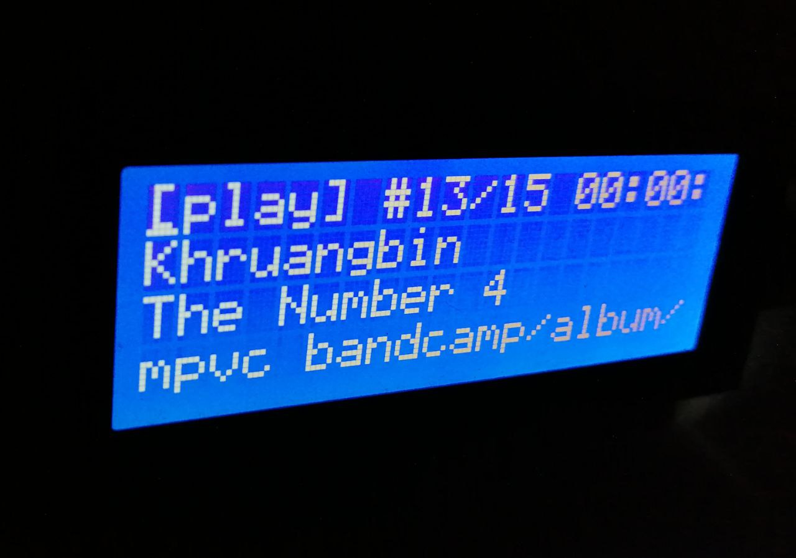

The logbook below is just that, a log of notes as I use and work on mpvc. Entries are chronologically ordered with oldest first, and, attempt to be self-contained focused on a certain functionality/topic, to the extent that it is possible.
What got me started on using mpvc is being able to play URLs. This is the cause to start writing what you are reading now (this repo at https://github.com/gmt4/mpvc/). As in
mpvc add https://kuplasound.bandcamp.com/album/mirage/
One thing that bothers me when using mpvc, is that most programs performing ipc on mpv socket, just leave the socket at /tmp/mpvsocket. A better default location for the mpv socket is $HOME/.config/mpvc/mpvsocket.
A thing that I'd like to be able to do is to perform mpvc load/save of the playlist, and, be able of manipulating the playlist using standard Unix commands eg. grep. The easiest way that comes to mind, is something a la: mpvc save | grep -v artist | mpvc load, this enables to filter out an artist, and drop all the songs by this artist.
One particular feature where improvement could be done mpvc -a audio.opus, when mpv finishes playing audio.opus, mpv terminates, and, the current playlist is lost. This happens as mpv is started with --idle=once. A solution for this is to start mpv separately with --idle=yes. A shortcut for this is to run `mpvc --mpv` that does exactly this, after this the mpv instance can be manipulated with mpvc, and does not terminate once mpv finishes playing.
One thing I keep doing a lot, is typing mpvc status and mpvc -i, to check the mpv playlist and status. To this end I've quickly hacked a minimal TUI named mpvc-tui, that continuously shows the mpvc playlist and status. In addition, while in mpvc-tui you can Control+C, to get a mpvc prompt to run quick mpvc commands, like: prev, next, pause, toggle, seek, volume, etc.
As explained above, mpvc-tui does three things: 1) display status, 2) display playlist, 3) prompt the user for interaction. Once we hit Control+C, and land on the user prompt, the following can be done:
Another nifty detail of mpvc-tui, is that it can be quickly spawn from the WM launcher by using mpvc-tui -x, then type a few mpvc commands to setup music, and close it. Or it can be started on the current terminal with `mpvc-tui` and left running as a long running program, and get back to it when needed.
When using mpc(1), playlists can be managed using the mpc load/save/lsplaylists commands.
In addition to load/save, mpvc adds the autoload/autosave commands:
mpvc autosave: save the current playlist to $XDG_CONFIG_HOME/mpvc/playlist/.
If no arguments are provided the current playlist is named "$(date -Imin)".
Otherwise, if a name is given "mpvc autosave ambient.m3u", then the file is saved as "ambient.m3u"
mpvc autoload: loads the named playlist from $XDG_CONFIG_HOME/mpvc/playlist/.mpvc lsplaylists: list the playlists under $XDG_CONFIG_HOME/mpvc/playlist/.
While using mpvc-tui, one ends up wanting to configure the minimal look and feel that mpvc-tui provides. To this end the file mpvc.conf under $XDG_CONFIG_HOME/mpvc/ provides a place to overwrite the default settings of mpvc-tui.
We are on "Show HN"! https://news.ycombinator.com/item?id=34013149
That one is easy, for that purpose mpvc cmd args sends the { "command": args } to the JSON IPC, use mpvc cmdr args to send the command, and retrieve the JSON IPC response. Some usage examples to test are:
mpvc cmd show-text "hello-world" 2000mpvc cmd af toggle lavfi=[loudnorm=I=-16:TP=-3:LRA=4]mpvc cmd af toggle lavfi=[dynaudnorm]mpvc cmd af toggle lavfi=[dynaudnorm=g=5:f=250:r=0.9:p=0.5]Note, audio filter commands above are lifted from https://github.com/mpv-player/mpv/issues/6210.
Mpv already plays URLs (both video and audio) from streaming platforms as youtube. So the one thing missing is to be able to search, select, and enqueue music from these services. This is provided by mpvc-fzf -s/-p, that does:
mpvc-fzf -s 'rolling stones': Search and return the list of URLs found.mpvc-fzf -s 'rolling stones' | fzf -m: Search, Select and return the list of URLs selected.mpvc-fzf -s 'rolling stones' | fzf -m | awk '{print $1}' | mpvc load: Search, Select, Enqueue and play the list of URLs selected.mpvc-fzf -p 'rolling stones': Is a shortcut of the last command that does the whole thing.Mpv IPC JSON socket allows receiving the media events generated by the running mpv instance. Subscribing to the mpv events can be done using the command: mpvc idleloop, by default events appear on standard output for a separate program to consume and react them. Some usage examples of the above are:
mpvc idleloop: send the mpv events to stdout.mpvc idleloop | awk '/playback-restart/ {print}': select only the "playback-restart" mpv events.mpvc idleloop | awk '/playback-restart/ {system("notify-send -u normal -i dialog-warning \"$(mpvc)\"");print}': Send a notification when the track changes.mpvc-tui -n uses mpvc idleloop to raise desktop notifications, as shown above.
I discovered fzf while adding support for selecting and playing YT videos #logbook-20221219, so I'm quite a newbie on fzf. Still I've been playing with fzf+mpvc to get them working together. So far I've focused on 4 points:
mpvc-fzf -p: For searching/playing Internet media from YouTube.mpvc-fzf -l: For searching/playing Local media from your file-system.mpvc-fzf -f: For managing the mpv status and playlist: say mpvc play, pause, seek etc.mpvc-fzf -F: For searching/playing through mpvc data: gets data from stdin, and outputs the selection on stdout. One example where this comes handy is to search chapters like: mpvc chapter-list | mpvc-fzf -F | mpvc-fzf -1 | xargs mpvc set chapter (shortcut mpvc-fzf -c).This is still on a very preliminary state, but it's amazing what fzf can do, and so far, seems to fit very well with mpvc.
Continuing on the topic of using fzf with mpv, I’ve decided to split the code into three scripts:
mpvc: that provides the mpvc functionality.extras/mpvc-tui: that provides the mpvc TUI functionality.extras/mpvc-fzf: that provides the mpvc FZF functionality.
I think it’s clear/simpler this way, as the mpvc-tui was getting more and more fzf functionality, that was unrelated to the TUI. This breaks some things, as for example, uses of mpvc-tui -[lfFspP] that now have become mpvc-fzf -[lfFspP].
A work in progress update, in no particular order, but, mostly focused on using mpvc to control a remote box (Raspberry Pi) acting as an audio/media center:
mpvc -S ~/.config/mpvc/mpvsocket-new --mpv add /path/to/media: Starts a new mpv instance listening on mpvsocket-new and adds media.mpvc socklist: Lists all mpv sockets, including those that are inactive: without a mpv instance running.mpvc sockclean: Clean inactive mpv sockets: without a mpv instance running.ssh -NL $HOME/.config/mpvc/mpvsocket0:$HOME/.config/mpvc/mpvsocket0 mediacenter
Note, the above command just "works", but probably has some rough edges, and can be improved.
mpvsocket0 is locally accessible and can be directly managed by mpvc, mpvc-fzf, mpvc-tui. For example, running mpvc to start a randomly chosen track from the playlist:
mpvc -q play $(( $RANDOM % $(mpvc get playlist-count) ))
mpvc cmd/sockcmd/repl/get/set/cycle.
Something experimental I've been testing lately is using: mpvc stash command to save the currently playing state, to be restored later. The commands implemented by mpvc stash [list|show|push|drop|apply] are inspired by git-stash(1):
mpvc stash list: Lists the currently mpvc stashes.mpvc stash show [name]: Shows the contents of the mpvc stash named [name].mpvc stash push [name]: Stashes the current mpvc state to [name].mpvc stash drop [name]: Removes the mpvc stash named [name].mpvc stash apply [name]: Applies the mpvc stash named [name].mpvc load/save that only loads/saves the playlist, as mpvc stash saves the current playing settings including: playlist-pos, playback-time, volume, mute, pause, etc. together with the playlist.
A few things have been going on since last entry, some effort focused on getting a “decent” site (this HTML thing you’re reading right now @ gmt4.github.io/mpvc ) where its easy keep track of whats going on. This effort has :
Keep posted.
This entry introduces mpvc-equalizer a Linear Phase 15-Bands Equalizer for the CLI/shell based on the firequalizer15.lua mpv-script.
The basic operations that are available in mpvc-equalizer are:
mpvc-equalizer preset: Provides a set of basic equalizer presets ready to be loadedmpvc-equalizer reset/load/save: To reset/load/save mpvc equalizer settingsmpvc-equalizer json/bars: To query the equalizer settings as JSON or as CLI barsAn example of the `mpvc-equalizer` to set equalizer values for classical music:
mpvc-equalizer preset mpvc-equalizer preset classical | mpvc-equalizer load mpvc-equalizer bars mpvc-equalizer reset
Continuing with the topic of the previous post about mpvc-equalizer, one reason for starting mpvc, was to ease was to managing audio from the CLI. In that sense mpv integrates well with ffmpeg to apply AV filters. However you've to, either start mpv specifying the ffmpeg cli flags for the AV-filters, or add keyboard shortcuts into the input.conf to be triggedred during runtime.
Instead of that, for quickly testing combinations of filters, I was looking for something more CLI oriented: apply the filters using the MPV JSON IPC. That's what happens under the hood when a command mpvc-cmdr af ... is run, for example:
# start adding a rubberband filter mpvc cmdr af toggle "@rubberband:lavfi=[rubberband=pitch=1:tempo=1]" # Change the AV filter is easy, rerun the command with the changes mpvc cmdr af toggle "@rubberband:lavfi=[rubberband=pitch=0.98:tempo=1]" # Removing the filter is as expected mpvc cmdr af remove "@rubberband:lavfi=[rubberband=pitch=0.98:tempo=1]" # Another option is toggling the AV filters on and off with mpvc cmdr af toggle "@rubberband:lavfi=[rubberband=pitch=0.98:tempo=1]" # The same goes for what filters are currently applied mpvc getr af | jq # Clearing all the current af filters mpvc setr af '' # Useful debuging af filters errors: lower/raise verbosity mpvc setr msg-level all=error mpvc setr msg-level all=warn mpvc setr msg-level all=info # Some af filters mpvc cmdr af toggle "@afade:lavfi=[afade=t=in:ss=0:d=15]" mpvc cmdr af toggle "@flanger:lavfi=[flanger=delay=1]" mpvc cmdr af toggle "@tremolo:lavfi=[tremolo]" mpvc cmdr af toggle "@vibrato:lavfi=[vibrato]" mpvc cmdr af toggle "@apulsator:lavfi=[apulsator]" mpvc cmdr af toggle "@aphaser:lavfi=[aphaser]" mpvc cmdr af toggle "@aecho:lavfi=[aecho=in_gain=0.9:out_gain=0.9:delays=1:decays=0.9]" # Some vf filters mpvc cmdr vf toggle "@life:lavfi=[life]" mpvc cmdr vf toggle "@showvolume:lavfi=[showvolume]" mpvc cmdr vf toggle "@showwaves:lavfi=[showwaves]" mpvc cmdr vf toggle "@showspectrum:lavfi=[showspectrum]" mpvc cmdr vf toggle "@avectorscope:lavfi=[avectorscope]"
A few things have been going on lately, among them, the most recent has been adding mpvc-web that is just a quick hack to control a running mpv instance from when no mpvc cli is available, a typical example is when you just have a phone or tablet with no cli. To this I resorted to mimic mpvc-tui interface but making it available through HTTP using python3 -m http.server. This seems to work fine for simple things like toggling music on and off, moving to next/prev entry in the playlist, and raising/lowering volume.
Check extras/mpvc-web for more, and you are warned: this is a ugly hack.
As a minor thing I've started aliasing mpvc commands that I use frequently to their "m" counterparts in bash, not perfect, but handy enough, and saves some typing:
$ grep mpvc ~/.bashrc
alias m="mpvc"
alias mh="alias | grep mpvc"
alias mi="mpvc -i"
alias mI="mpvc -I"
alias ma="mpvc-autostart"
alias mc="mpvc-chapter"
alias mci="mpvc chapter-list"
alias mcn="mpvc chapter-list-nr"
alias mcI="mpvc chapter-list-full"
alias me="mpvc-equalizer"
alias mtt="mpvc-tui"
alias mtth="mpvc-tui -H"
alias mm="mpvc-mpris"
alias mw="mpvc-web"
alias mff="mpvc-fzf" # fzf on mpvc
alias mffa="mpvc-fzf -a" # fzf on mpvc stash-list
alias mffb="mpvc-fzf -b" # fzf on mpvc ytdl-archive URL
alias mffB="mpvc-fzf -B" # get on mpvc ytdl-archive URL
alias mffc="mpvc-fzf -c" # fzf on mpvc chapter-list
alias mffd="mpvc-fzf -d" # fzf on -d /path/to/music/
alias mffe="mpvc-fzf -e" # fzf on mpvc-equalizer
alias mfff="mpvc-fzf -f" # fzf on mpvc play-list
alias mffg="mpvc-fzf -g" # fzf get/fetch ytid URL to ytdl-archive
alias mffG="mpvc-fzf -G" # bis
alias mffl="mpvc-fzf -l" # fzf over local files
alias mffo="mpvc-fzf -o" # fzf search and return first ytid URL
alias mffp="mpvc-fzf -p" # fzf search and add ytid URLs from Invidious
alias xargn="xargs -n1" # xargn mpvc cmd
rseq() { seq "$@" | tac; } # rseq | xargn mpvc cmd
mffo1() { mpvc add $(mpvc-fzf -o "$@" | mpvc-fzf -1); }
Check the Now Playing @ now/ that builds upon mpvc-tui scrobbling code to generate a simple list of the most played media. The Anti EP by Autechre has raised to the top position.
A simple need to have some background music automatically playing while I'm near the device where mpvc is running, lets say, in media center mode, and, pausing the audio when I'm away.
A solution for this was to write a small script in extras/mpvc-autostart that periodically pings an IP (for example your phone LAN IP, or alternatively detecting the presence of a Bluetooth device you carry with yourself), then, if the presence of the device is detected, the audio is resumed, otherwise, the audio is paused.
For an example of its usage, just run PERIOD=300 NCHECK=3 mpvc-autostart -i 192.168.0.2 where 192.168.0.2 must be replaced by the LAN IP of your phone. The listing below show the output mpvc-autostart doing periodic pings at 300 sec (5 minutes) intervals. When NCHECK=3 consecutive ping checks fail to detect the device, the audio is paused (pause=true). As soon as one ping check succeeds, the audio is resumed (pause=false). This means that each 300 * 3 seconds (15 minutes) the audio can be paused, and in 5 minutes resumed. Personally I prefer to raise NCHECKS=6, to have about 30 minutes of audio without pauses, anyway, the parameters are there for catter for your needs, just play with them.
user@box mpvc $ PERIOD=300 NCHECK=3 mpvc-autostart -i 192.168.0.2 # mpvc-autostart mpvc pingscan PERIOD=300 NCHECK=3 192.168.0.2 # 2023-09-15T19:26+00:00 mpvc-autostart PERIOD=300 NCHECK=6 pause=false c=0 n=0 # 2023-09-15T19:31+00:00 mpvc-autostart PERIOD=300 NCHECK=6 pause=false c=0 n=-1 # 2023-09-15T19:36+00:00 mpvc-autostart PERIOD=300 NCHECK=6 pause=false c=0 n=-2 # 2023-09-15T19:42+00:00 mpvc-autostart PERIOD=300 NCHECK=6 pause=false c=0 n=-3 # 2023-09-15T19:47+00:00 mpvc-autostart PERIOD=300 NCHECK=6 pause=true c=0 n=0 # 2023-09-15T19:52+00:00 mpvc-autostart PERIOD=300 NCHECK=6 pause=false c=59 n=0 64 bytes from 192.168.0.2: icmp_seq=1 ttl=64 time=104 ms
This approach has some limitations, lets say, sometimes you want to fully disable mpvc-autostart for a time, because:
mpvc-web and set mpvc vol 0 for a time.
This entry aims to provide a comprehensive view of the usage patterns of mpvc.
Several of the usage patterns have been already covered in the previous entries of the logbook, like: searching online media, manipulating the playlist or playing state, or, using mpvc-stash(1) for storing/replaying the mpv playing state.
This entry focuses on combining the previous individual usages into an overall usage pattern for using mpvc for listening music, viewing videos,podcasts, etc.
for this mpvc has to carry the following tasks:
mpvc-fzf closed the gap, for example using mpvc-fzf -p 'rolling stones' and choosing the songs to add to the playlist from the results.
mpv + yt-dlp shines
mpvc stash is used
mpvc add, mpvc-fzf -p query, or directlympvc mv or mpvc rm or its counterparts mpvc searchmv and mpvc searchrm modify the playlist of the running mpv.mpvc parameters like repeat, single, volume, idle, video, aspect, full screen, etc.mpvc stash current and store it with mpvc stash pushmpvc stash has to be replayed use mpvc stash apply, or mpvc stash edit to modify ityt-dlp has --download-archive functionality that is useful (this can be enabled in docs/mpv.conf).
This works as follows:
mpvc-fzf -g URL, with get the URL and download it where mpv.conf defines.mpvc to resolve a downloaded URL to the corresponding local file was needed.
For this when MPVC_LOCAL_CACHE=1 is enabled, mpvc provides functionality to do that local cache search.
mpvc-web that mimics mpvc-tui but allows to manage mpvc from a mobile phone, tablet or Windows machine.
Recently basic support for mpvc observe landed on mpvc, to observe mpv property changes. This can be used as show below to watch for volume changes:
$ mpvc observe volume | awk '/property-change/'
{"event":"property-change","id":1,"name":"volume","data":"20.000000"}
{"event":"property-change","id":1,"name":"volume","data":"21.000000"}
Besides the standard fixes, new functionality, and, performance improvements to the core functionality of mpvc, a few tools under extras/ have also received additional attention.
One of the tools is extras/mpvc-web, that as said before, is just "mpvc-tui for the web", that is, a web interface for managing mpvc from a browser, when no terminal is available, this fits a common usage, for example when you are at home, away from the computer, with the phone or tablet at hand and want to manage music playing through mpvc, this is where mpvc-web shines.
However, mpvc-web was and continues being a hack, which is good for development purposes and my current usage, but that also means that security-wise some decisions are questionable in a home LAN, since uses plain HTTP, without authentication nor HTTPS security, and allows running mpvc shell commands as your user!!, that are controlled by making HTTP requests coming the home LAN. So this has been irking me for a time, to a point I was using it less, and, last I've come to a compromise solution that think easily addresses the limitations in authentication and HTTPS security.
The solution has been to change the defaults: so now mpvc-web runs by default on localhost, and, a new option: `MPVC_WEB_SSL_ENABLE=1 mpvc-web` setups a `stunnel(1)` HTTPS connection, this allows to address the HTTPS security part. Next, to address the authentication part, `stunnel(1)` provides peer certificate verification, so using the new option `MPVC_WEB_SSL_ENABLE=1 MPVC_WEB_SSL_VERIFY=2 mpvc-web` only clients that provide a valid peer certificate can connect to mpvc-web.
So, now the following alternatives are available, ordered from less to more secure:
So with this security issue addressed, I can keep on using and improving mpvc-web.
A few changes have been going on extras/mpvc-web
, latest changes add the option MPVC_WEB_ARCHIVE_ENABLE to serve the mpvc ytdl-archive/ dir over HTTP/S
Yeah, that's hacky and a kludge, but its also quite handy. As it means that the full archive can be reachable from the LAN over HTTP/S, so if mpvc is running on an central audio/media center, then besides controlling with mpvc-web, you can also easily fetch the archive media files over HTTP/S to share/store them to mobile devices like laptop/tablet/phone.
This also means that you can play that media from a separate device running mpvc, like a laptop, by adding files from the ytdl-archive URL, to browse the ytdl-archive using fzf use mpvc-fzf -b "", this by default queries https://localhost:8443/ytdl-archive/, use mpvc-fzf -b https://your-mediacenter:8443/ytdl-archive/ or any other URL to query other archives.
MPRIS stands for Media Player Remote Interfacing Specification and its a handy thing to have, as WM have builtin support this to programmatically control media players, meaning that keyboard Media keys work directly for controlling Media players.
Check mpv-mpris for docs/setup, below is a quick setup:
mkdir -p ~/.config/mpv/scripts curl -fsSL -o ~/.config/mpv/scripts/mpris.so https://github.com/hoyon/mpv-mpris/releases/download/1.0/mpris.soThen, start a new instance of mpv player that loads `mpris.so`
Well, been "moving fast & breaking things" lately (there'll be more breakage to come), yet the goal is achieved, and, now this thing (mpvc) runs on FreeBSD and MacOS. I consider them to be working, and, usable but rought, since are not UNIXes that I do not run regularly.
Mpv does a great job on handling chapters, however, sometimes you end up wanting to modify chapters to existing media, or media that lacks chapters. This is the purpose of mpvc-chapter: managing chapter-files. Long story short, basically this boils down to keeping chapter-file under $HOME/.config/mpvc/chapters/. mpvc-chapter -h shows the available cmds:
mpvc-chapter load, checks if a chapter-file exists for the current media, if the chapter-file exists then basically loads it with: mpvc set chapters-file $(mpvc-chapter file).
mpvc-chapter add|gen, the "add" adds a new chapter each time it is invoked, while "gen" gets an input file with one line per chapter with each line format being "timepos chapter-title" where timepos are incremental timestamps in MM:SS, and generates a chapter-file.
PS: Although the title says "Introducing mpvc-chapter", it has been present for a long time, it was just an small auxiliar command, missing documentation, the above lines addresses this.
While mpvc was playing `The Number 4` from Khruangbin's EP `The Infamous Bill` decided it would be fun to interface mpvc with a USB LCD on the Raspberry PI that acts as a jukebox, so each time a track starts output what's playing now for some seconds, and then poweroff the LCD. Turned out nice and easy by using mpvc-tui -S scrobbling code, and masaging the output to pipe it to the USB LCD for presentation. For the record the output from mpvc-tui is:
mpvc-tui -S 'echo $(date +"T%H:%M") $(mpvc -f "[%status%] #%position%/%playlistlength% %time% %artist% - %title% - %path%")' 'false'
And this is how it looks:

Some notes on my current mpvc setup, I've setled on having the following commands continuosly running on background: mpvc-tui, mpvc-web, mpvc-autostart, and mpvc-osd:
mpvc-tui -T mpvc-web -b 0 -s 1 -a 1 -R 60 -t dark -c start mpvc-autostart -p 600 -n 6 -i [local_ip] # mpvc-osd mpvcosdUsing mpvc-web, on a device with a HDMI display, opens news possibilities of displaying video media, that is beyond just acting as a jukebox for playing music. For setups where the mediacenter has a video display with X11 x2x(1) might come handy to send X11 input events from a ssh-client to control the remote mpv running on X11, an example invocation is:
ssh -X $USER@$HOST x2x -west -to :0 # be sure to read x2x(1)
Last-Modified: Thursday, 4 July 2024 by gmt4 Powered by #HTML 🧡 💚 💙